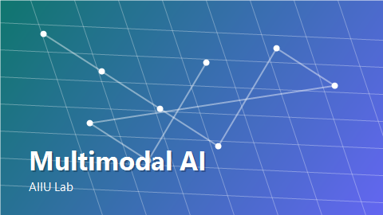
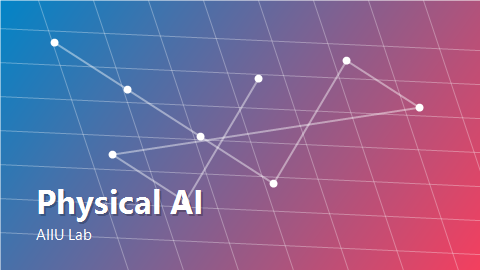
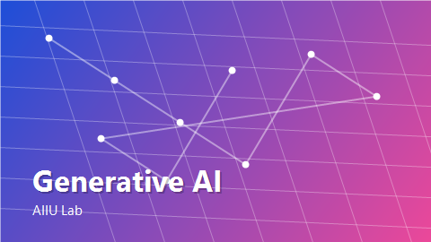

Research Focus
AIIU Lab studies visual intelligence across perception, generation, robustness, biometrics, tracking, 3D reasoning, multimodal reasoning, and autonomous validation.
Research Center for Information Technology Innovation, Academia Sinica
We build secure, embodied, and agentic visual intelligence: from computer vision and deepfake detection to MLLMs, physical AI, and multimodal AI agents.
Led by Dr. Jun-Cheng Chen, Associate Research Fellow.
AIIU Lab studies visual intelligence across perception, generation, robustness, biometrics, tracking, 3D reasoning, multimodal reasoning, and autonomous validation.
Our work connects foundation models with real visual data, physical scenes, and reliable evaluation for practical AI systems.
Watermark robustness, adversarial attacks, backdoors, model safety, and trustworthy visual generation.
Foundation-model adaptation, explainable detection, face forgery analysis, and robust media forensics.

Vision-language reasoning, hallucination analysis, multimodal evaluation, and reliable foundation models.

Object pose, 3D/4D scene understanding, stereo geometry, robotic perception, and real-world visual grounding.
LLM/VLLM agents for data generation, validation, prompt optimization, and autonomous visual workflows.

Controllable diffusion, image/video synthesis, restoration, concept control, and creative visual modeling.

An agentic pipeline for generating and validating synthetic visual data for robust computer vision training.